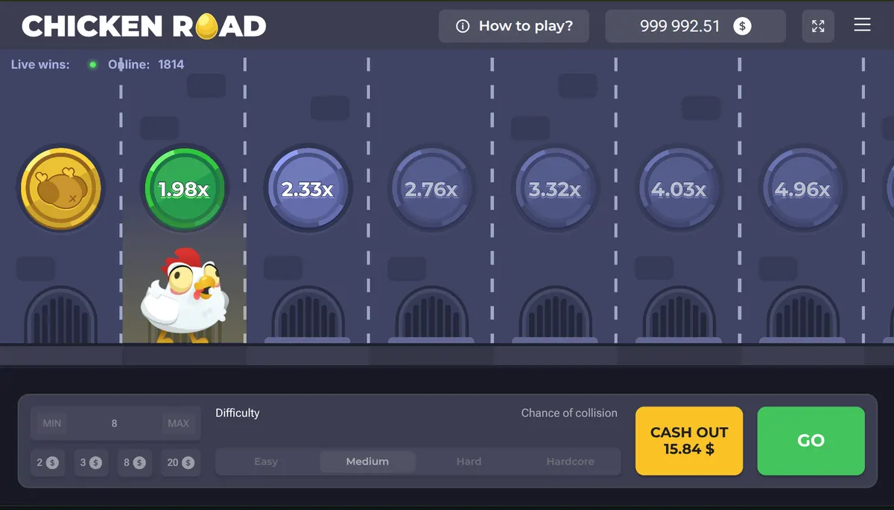

Guide
Come funziona Chicken Road: la meccanica spiegata passo per passo
Puntata, avanzamento del pollo, moltiplicatore che sale e cash out prima della fine del round: la meccanica di Chicken Road senza giri di parole.
🔞 Solo 18+ · Gioco d'azzardo con denaro reale

Chicken Road è un gioco crash-style da casino online: si piazza una puntata, un pollo avanza lungo un percorso e il moltiplicatore di vincita cresce a ogni passo. L'unica decisione che conta è quando incassare.
Il round in quattro momenti
La struttura di un round è sempre la stessa e non cambia da operatore a operatore.
- Puntata. Imposti l'importo prima dell'avvio. È l'unico importo a rischio in quel round.
- Avvio. Il pollo comincia ad avanzare automaticamente lungo il percorso.
- Moltiplicatore. A ogni passo il moltiplicatore sale progressivamente.
- Cash out. Devi incassare prima della fine del round per bloccare la vincita al moltiplicatore corrente. Se non lo fai in tempo, la puntata viene persa.
Cosa significa «crash-style»
Nei giochi crash il round può terminare in qualsiasi momento. Non esiste un punto in cui la fine diventa più o meno probabile in base a quanto è già durato il round: ogni round è indipendente dai precedenti. È lo stesso principio che regola qualunque gioco basato su un generatore di numeri casuali certificato.
Perché il timing è l'unica leva
Il margine matematico a favore del banco è fissato dal gioco e non cambia in base a come giochi. Quello che cambia è il profilo dei tuoi risultati: incassi bassi e frequenti danno molte vincite piccole, incassi alti danno poche vincite grandi. Nessuna delle due modalità sposta il valore atteso.
Da verificare prima di giocare con soldi veri
La meccanica esatta degli ostacoli, il provider ufficiale e la certificazione RNG vanno verificati direttamente presso l'operatore: sono informazioni che ogni casino con licenza pubblica nella scheda del gioco.
Se vuoi prendere confidenza senza rischi, parti dalla modalità demo gratuita.